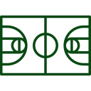

QUEM SOMOS NÓS?
Como costumamos dizer: Somos uma família! Nossa família, o projeto Anjos da Quadra, surgiu em junho de 2018, com objetivo de integrar esporte e educação, oferecendo à comunidade atividades no contraturno escolar. Atualmente, participam do projeto crianças de 6 a 18 anos, que através do projeto tem oportunidade de desenvolver diversas habilidades.
QUEM ESTÁ POR TRÁS DO PROJETO?
A equipe do projeto Anjos da Quadra, é composta exclusivamente por voluntários, que são responsáveis por todas as atividades, bem como o gerenciamento do projeto. O projeto é coordenado por Karine Braga, que conta com apoio do educador físico Pedro, da pedagoga Valquíria, do treinador físico Sandro e demais voluntários.
O QUE FAZEMOS?
Basquete
O Basquete é ofertado as crianças a partir de 6 anos. Além do beneficio aliado à prática esportiva, essa modalidadeauxiliano desenvolvimentode competênciascomoa disciplina, a organização, e o compromisso.
Reforço Escolar
Para se manter nas atividades esportivas do projeto, as crianças devem manter o bom desempenho escolar. Assim, para suprir a demanda das crianças que apresentam desempenho insatisfatório e/ou dificuldade de aprendizagem, são ofertadas aulas de reforço no contraturno escolar.
Suporte
O projeto promove aconselhamento aos seus membros, visando auxiliar na retirada da 1ª via de documentos (RG, carteira de trabalho e etc), confecção de currículos, inscrições em vagas de estágio e oportunidades de emprego e fornecendo suporte para os nossos atletas de forma geral.
Doação de Cesta Básica
Observamos a necessidade de realizar a doação de cestas básica aos membros mais carentes do projeto. Hoje, ampliamos essa ação, e além dos membros do projeto, as cestas básicas são doadas a outras comunidades/projetos.